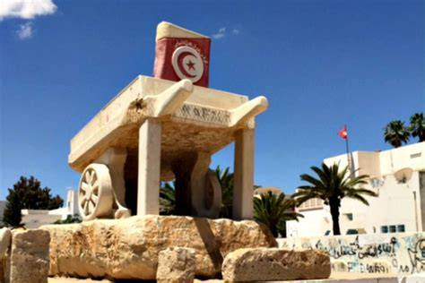

Monument Mohamed Bouazizi
Ce monument commémore Mohamed Bouazizi, jeune vendeur ambulant dont l'immolation en décembre 2010 a déclenché la Révolution tunisienne et le Printemps arabe. Lieu de mémoire et de recueillement, il symbolise la quête de dignité et de liberté.